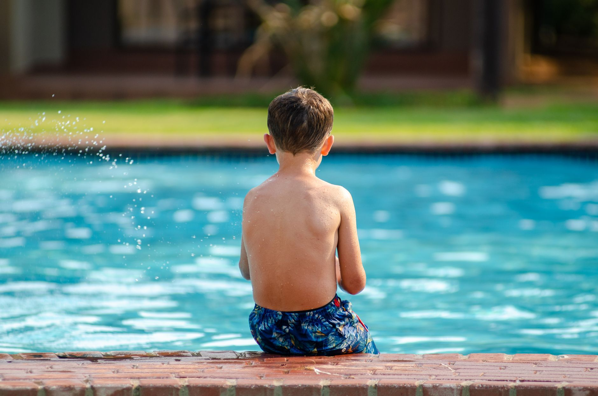

Small Programs, Big Dreams: What the Rise of Youth Swim Schools Means for Tampa Bay Families
Across the country, youth aquatic programs are making waves — and not just in the pool. A recent story from The Business Journals highlighted how swim schools built around a clear mission and a love for the water are growing into thriving community institutions. It is a story that resonates deeply with families right here in Wesley Chapel, Land O' Lakes, and the greater Tampa Bay area.
Whether your child is just learning to float or is already competing in club swimming or water polo, the lesson from programs like these is simple: when a community invests in quality aquatic education, young athletes flourish in ways that extend far beyond the pool.
Why Aquatic Programs Matter More Than You Might Think
Many parents enroll their children in swim lessons for safety reasons — and that is an excellent starting point. Florida, with its abundance of pools, lakes, and Gulf coastline, makes water safety an especially urgent priority. However, structured aquatic programs offer young athletes so much more than the basics.
When swimmers and water polo players train in a focused, supportive environment, they develop a unique combination of physical skills and personal qualities that stay with them for life. Consider what regular aquatic training builds in young people:
- Cardiovascular endurance and full-body strength developed through consistent practice in the water
- Discipline and time management as athletes balance school, training, and competition schedules
- Resilience and mental toughness from learning to push through fatigue and setbacks during training
- Teamwork and communication, especially in team sports like water polo, where coordination is everything
- Goal-setting habits that translate directly into academic and professional success later in life
These are not just talking points — they are outcomes that coaches, educators, and parents observe every season.
The Growing Demand for Quality Programs in Wesley Chapel and Land O' Lakes
The Tampa Bay area is one of the fastest-growing regions in the entire country, and communities like Wesley Chapel and Land O' Lakes are expanding rapidly. With that growth comes a rising demand for high-quality youth sports programming — including aquatics. Families moving into the area are actively seeking programs that are structured, safe, and genuinely invested in athlete development.
This is exactly the gap that Nexar Aquatic Academy was built to fill. Rather than offering a one-size-fits-all approach, the academy focuses on meeting young athletes where they are — whether that means foundational swim skills, competitive swimming development, or the fast-paced, strategic world of water polo.
What Parents Should Look for in a Youth Aquatic Program
If you are evaluating aquatic programs for your child, it helps to know what separates a great program from an average one. Here are a few qualities worth prioritizing:
- Qualified, experienced coaches who understand both the technical side of aquatic sports and the developmental needs of youth athletes
- A clear progression pathway so that young athletes are always working toward the next level of skill and competition
- A positive team culture where effort, respect, and improvement are valued alongside results
- Strong communication with parents so that families feel informed and included throughout the season
- Appropriate age-group training that challenges athletes without risking burnout or injury
Your Child's Aquatic Journey Starts Here
The success stories coming out of youth aquatic programs nationwide are a reminder that great things begin locally. A supportive coach, a dedicated team, and a community that believes in its young athletes — that combination is powerful.
At Nexar Aquatic Academy, we are proud to be part of the Wesley Chapel and Land O' Lakes community, helping young athletes discover what they are capable of in and out of the water. Whether your child dreams of competing in college, earning a scholarship, or simply falling in love with a sport that will serve them for a lifetime, the journey starts with one decision: getting in the pool.
If you are ready to learn more about our programs, we encourage you to reach out and connect with our coaching staff. We would love to be part of your family's aquatic story.
Ready to get in the water?
First practice is completely FREE — no commitment needed.